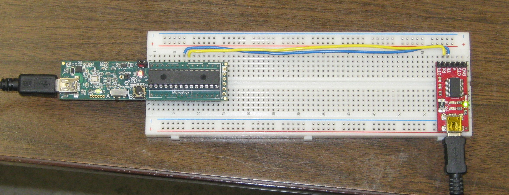

I'm setting up a class set of Microstick II with a PIC32MX150F128B installed in the socket. A USB to Serial adaptor is also wired to the PIC Tx and Rx lines.
The Microstick II schematic included with the kit as shipped has Tx and Rx marked backwards! I have used the following arrangement:
PPSOutput(4, RPB10, U2TX); // MAP Tx to PB10 - pin 21
PPSInput (2, U2RX, RPB11); // MAP Rx to PB11 - pin 22A portion of the schematic is here (note interchange TxD and RxD):
The pinout can be found on page four of the datasheet.

The Test program is here:
Previous notes -- testing without microstick